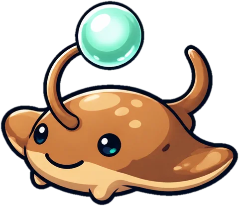

 ElectricEarth
ElectricEarthTap a stage to read its story.
At first glance Terrling looks like a friendly little round stingray floating just above the ground - a warm sandy-brown disc-body with a friendly upturned face, big eyes, and a glowing teal orb bobbing above its head on a thin tendril. Its small flat fins ripple when it moves, raising tiny sparks from the earth below. Terrling loves to drift down the Storm Spire's rocky ramps, letting static build up in its belly so it can release a tiny pop that startles it into a flip. The guardians call it the Spire's greeting card.
Field note: Terrling's glowing orb dims blue-to-white just before a full storm - local guardians use it as a one-creature weather vane.
Storm Spire. Terrling and its family are found in the Storm Spire. See everyone who lives there.
Share a Bond Food that matches its types to become friends. Terrling loves:
A Bond Food is not a trick. It joins your spirit with the Kimuro's spirit, and only when it chooses you.
Print the Kimuro adventure packs: mazes, cards, a board game and Bond Mark medals.
See the printable packs